Total Guide to Choosing the
Best CNC Milling Machine Cutters
Introduction
It's important to be familiar with and have access to the variety of different cutters commonly used on CNC Milling machines for various situations. This 2 part article provides a good overview of the different types of cutters available. To learn how to choose the right tool for each kind of job, check out our multi-part series on how to choose cutters.
So, let's start delving into the different kinds of cutters milling uses.
Note: If you use a CNC Router, you can use most of these except for the larger tools not suited to higher rpms such as Face Mills. To learn more about cutters specific to CNC Routers, see our post on CNC Router Cutter Types.
Endmills
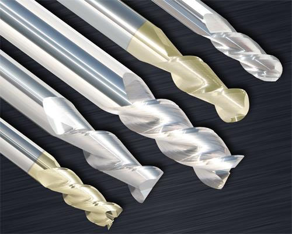
Endmills...
The most common cutters are endmills or end mills, if you prefer. They come in a plethora of sizes, geometries, coatings, and even materials they're made out of. We'll just cover the basics.
Carbide vs HSS
The first thing to explore is the material the endmills are made of, typically carbide or HSS, though there are a few more exotic alternatives such as powder metal.
For a lot of production machine shops, the question of whether to use carbide endmills or HSS (high speed steel) seems silly. Carbide is always better, right?
It turns out that it depends on the material to be cut as well as on the machine's maximum spindle speed and potentially some other factors. If you're working with softer materials like Aluminum and your spindle is not capable of reaching the recommended speeds for carbide in aluminum, you might very well discover HSS endmills make more sense. Check out our article on this to see how to figure it out.
For smaller mills whose spindle won't exceed 6000 rpm that will be cutting aluminum, I typically recommend HSS for endmills larger than 1/2" diameter and carbide for smaller endmills. This saves a lot of cost on the larger endmills (which you might prefer be indexable and using carbide inserts anyway) but keeps the rigidity up on the smaller endmills. For more on rigidity and deflection, see our article, "Who is Afraid of Tool Deflection?"
Sizes
Endmills are available in a variety of sizes both metric and Imperial. Even very tiny micro-mills can be had for machining extremely small features. Something surprising to know about endmill size is that the tolerances on diameter for most endmills are not especially precise. If your work demands precision, you may need to make a test cut with an endmill to determine what its real diameter is. You can also measure them directly, but the test cut is a more reliable method.
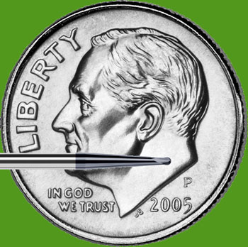
Micro-Mill...
How Many Flutes?
The number of flutes the endmill has is crucial depending on the material you want to cut and the capabilities of your machine. The most common options are 2, 3, or 4 flutes. Unless you know exactly what you're doing, you never want to use more than 3 flutes with aluminum. The reason is that aluminum produces very large chips relative to other materials. The flutes provide the path for chips to escape when the endmill is down in a hole or slot. 2 and 3 flute endmills have a lot more chip clearance so they work with aluminum. Using a 4 flute where the chips are confined at all results in jammed chips and a broken cutter in aluminum almost every time.
For most other materials 4 flutes is the norm. You want to use as many flutes as you can because the flutes act sort of like a "spindle multiplier". For a given spindle speed and chipload, a 4 flute can be fed twice as fast as a 2 flute and it will tend to give a better surface finish. The 3 flute was developed as a nice compromise between using a 2 flute or a 4 flute in aluminum. It has sufficient chip clearance for all but the most gummy aluminums, yet it can be fed about 50% faster than a 2 flute at the same spindle rpm.
There are quite a few other varieties available that are seen less often. Endmills with more than 4 flutes are great for increasing productivity on tough materials like Titanium where the spindle just can't turn very fast. And there are a whole host of situations where a single flute endmill offers advantages:
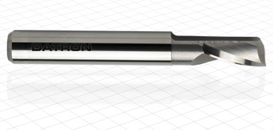
Single Flute Endmill
If you're worried about remembering how many flutes to use, G-Wizard Calculator's CADCAM Wizards will automatically select a tool with the right number.
Center Cutting or Not?
Most 2 and 3 flute endmills are center cutting. Some 4 flute endmills are not. A center-cutting endmill is one that can be plunged straight down into the material. None center cutting endmills have a depression in the middle with no cutting edge, so they'll go down a very short distance and then can be pushed no further:
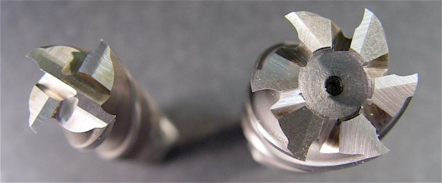
Center cutting on the left, non-center cutting on the right. Thanks for www.micro-machine-shop.com for the illustration.
The only good reason to buy a non-center cutting endmill is they're cheaper. I prefer to only have center cutting endmills around as I most often discover an endmill is not center-cutting the hard way.
BTW, there is an argument to be made never to plunge endmills (well, almost never). It's the hardest possible way to get the endmill into the material, ramping or helixing are far more gentle. Given that perspective, perhaps one should always prefer non-center cutting so as to be incented to avoid plunging.
Single vs Double Ended and Stickout
Speaking of cost, you can purchase your endmills as either double or single ended:
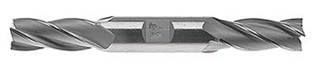
A double ended endmill is like 2 endmills in one...
For a little more money than one single ended endmill and a lot less money than two single ended endmills you can purchase a double ended endmill. When one end is dull, you just reverse it in the toolholder and you've got a brand new endmill ready to go. The downside is that most endmill crashes end with a broken endmill that you may or may not be able to flip around. Still, they could be an effective way to reduce your costs if you mostly dull them without breaking too many outright.
This brings me to an important concept which is called "Stickout." Stickout is the distance from the end of the toolholder to the tip of the endmill:
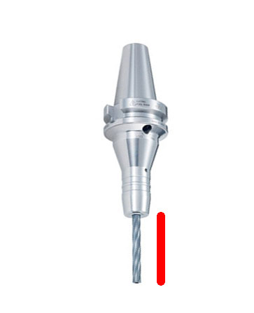
Stickout...
The more stickout the less rigid a tool is. If it sticks out too far without support and you work it too hard, the cutting forces will make it bend, which machinist's call "Deflection." Here is an exaggeration of that effect:
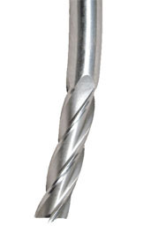
The takeaway at this stage is that while it may seem smart to buy endmills that are as long as possible because you'll have flexibility to use them in more situations, that's probably not the best way to go. Shorter endmills are more rigid. Save the extra long ones for times when you have no other choice. We'll see something similar with Twist Drills as well.
G-Wizard Calculator does all kinds of useful calculations around tool deflection and can help keep you out of trouble where deflection is concerned.
Endmill Coatings
The right coating can dramatically increase the performance of an Endmill (or other cutter, such as a twist drill). There are lots of different coatings available, some of which are amazing and some of which are very exotic and expensive. The choice to use coated endmills is a cost versus benefit choice. If your machining benefits enough from the extra performance of a premium coating, by all means, purchase endmills with a coating.
It helps to know which coatings are good for which materials. Our G-Wizard Calculator software tells you that:
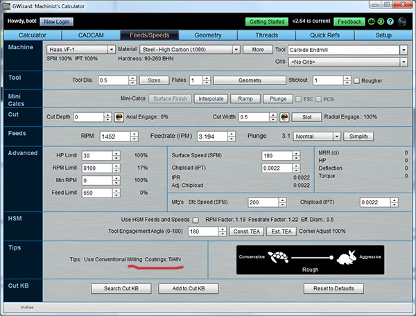
Bullnose, High Helix Endmills, and Other Geometries
Just as coatings can account for big differences in performance between budget and premium endmills, so too can geometry. The simple fact of the matter is that a lot of claims are made for various geometries and the proof is in the pudding. Some things are less controversial some are very subtle. When you're starting out, buy decent quality endmills but don't break the bank on fancy geometries. When every increment of productivity starts to be money in the bank, test some of the premium endmills to see what works for you. If you're curious to learn more about what sorts of geometry tricks these endmills play, check out our post on Carbide Endmill Grades, Geometries, and Coatings.
Two geometries worth exploiting fairly early on are Bullnose Endmills and High Helix Endmills. Bullnose endmills have a slight radius on their edge so they can leave a nicer surface finish and can be less prone to chipping--both great attributes.
High Helixes can help pull the chips out in materials like aluminum much better:
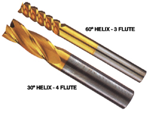
Roughing Endmills (aka "Corncob" roughers)
Roughing endmills like the one pictured have little serrations in the teeth. These serrations do a couple of useful things. First, they break up the chips making it easier to clear them out of the hole you're cutting in. Second, the are less prone to chatter. All those serrations produce a variety of vibrations that interfere with one another instead of creation a single ringing (more often screeching, lol) tone.
Roughing endmills are not very expensive and can provide a nice step up in productivity. I like having some around in a couple of sizes, especially sizes that are a little small for a decent indexable endmill. See our article on these useful cutters for more info and be aware that G-Wizard Calculator can figure the feeds and speeds for them too.
Ballnosed Endmills
So far we've talked about endmills that are largely used for what's called "2 1/2D" machining, sometimes called "Prismatic" machining. This is machining where the Z or height of the surface doesn't change in smoothly flowing contours. It may drop down for a pocket or two, but the floors of the pockets and the top of the part are generally smooth planes punctuated by holes and more pockets. The vast majority of parts have this characteristic, but for those that don't, you'll be doing true "3D" machining, and to do that, you'll want to use a Ballnosed Endmill.
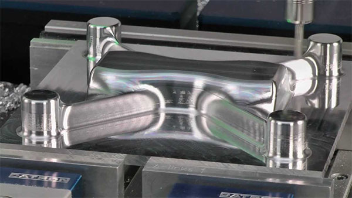
Molds often require 3D machining...
Ballnoses create scallops whose size depends on the diameter of the ballnose, the depth of cut, and the stepover between successive passes:
Ballnose Scallops...
Indexable Endmills and Facemills
An indexable endmill making its way through a pocket...
Large endmills can remove a lot of material, but they're also very expensive. It didn't take the machining world long to decide they're too expensive and to come up with indexable tooling as the answer. With indexable tooling, the cutting edges are removable carbide inserts. A lot of different indexable tooling is available, but for this article we'll confine ourselves to indexable endmills and facemills.
For efficient roughing, it's convenient to have an indexable endmill that's 5/8's to 3/4 inches in diameter. That's the size where buying solid endmills starts to be expensive, but it is small enough that what's left for smaller solid endmills to clear is little enough that they can do that job quickly. So, you rough with the indexable and finish with the solid endmill. Depending on the jobs you have, larger indexable endmills may make sense too. It's basically a tradeoff between your machine's capabilities, how tight the confines of your workpiece are, and the cost to keep a bunch of indexable tooling and an inventory of suitable carbide inserts for them.
The companion to indexable endmills are called "facemills" because they're used for "facing." Facing is surfacing a large flat area, typically the top of the part.
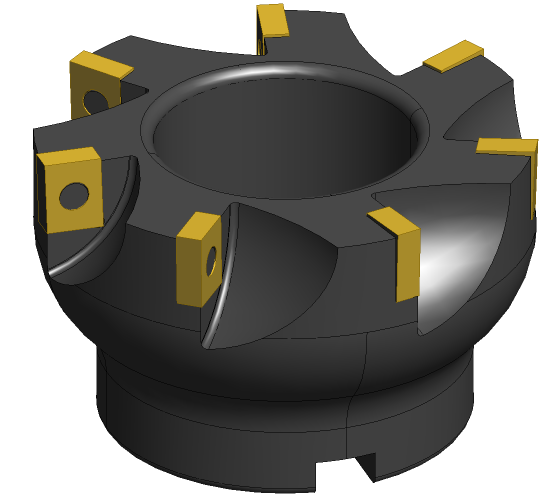
Here's a typical face mill with 90 degree inserts...
If you're going to be purchasing a face mill, it's worth looking at our article that compares the insert angles to see which is best for your application.
Twist Drills
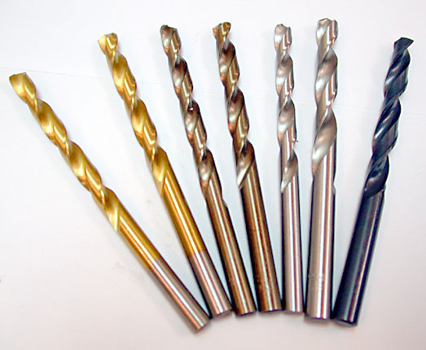
The ubiquitous twist drill was probably the first cutter on this page each of us used, perhaps in a handheld electric drill. While only machinists have endmills, most any home do it yourselfer has twist drills on hand. But there's more here than meets the eye. Statistics show that holes are by far the most common feature CNC machines make. In addition, the Material Removal Rate of twist drills is outstanding, and usually better than equivalent sized endmills. It may even make sense to drill a bunch of holes in a grid over your pocket and then machine the web between the holes out with an endmill.
Like endmills, twist drills come in different sizes, coatings, materials, and lengths.
Twist Drill Sizes
Twist Drills come in a lot more diameters and sizes than endmills. This should probably come as no surprise given how popular holes are and how hard it is to use the same twist drill to make different sized holes, whereas endmills can be a lot more flexible.
In additional to fractional Imperial and Metric sizes, there are special sizes such as number and letter sizes. G-Wizard Calculator has all this in its Drill Sizes table.
HSS, Cobalt, and Carbide + Coated or Uncoated
If you need the toughness and rigidity of carbide for working tough materials with high productivity, there's no substitute. For most others, buy a full index of either HSS or Cobalt. I heard of one shop that bought HSS and a box of Cobalts. The Cobalts went in the Tool Crib and were used to replace the HSS twist drills as needed. The assumption was that the ones that needed it were getting a lot of use and were worth upgrading.
Coated or uncoated is a matter of preference. Coatings can help but seem to be a little less impressive than on Endmills, probably because most twist drills are not carbide.
Screw Machine or Jobber Length
Twist drill lengths can vary as well. Most non-machinists are used to jobber-length twist drills, such as those pictured above. Here's how the two compare:
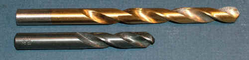
Screw machine length drill is same diameter but much shorter than the Jobber Length. It's also much more rigid. Thanks to www.mini-lathe.com for the image.
Because they're shorter, they're also much more rigid. The hole they make is likely to be more true and you're less likely to break one. Most machinists prefer to use screw machine length twist drills wherever possible for those advantages.
Silver and Deming Drills
Typical sets of twist drills only go up to 1/2" in diameter. To drill bigger holes you may want to use what's called a "Silver and Deming" drill.
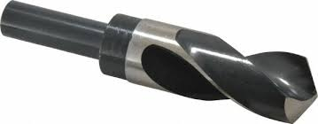
For larger holes try Silver and Deming bits...
These bits have a 1/2" shank and much larger flutes. The shank is kept small so they fit standard drill chucks. A couple of thoughts here. First, standard drill chucks are not very accurate and for CNC Machining we'll often use collet chucks instead. Second, big twist drills can soak up a lot of horsepower so make sure your machine is capable of driving one in the material and conditions you've chosen. G-Wizard Calculator can automatically make the power calculations and warn if your machine isn't up to it.
Parabolic Flutes for Deep Holes
Drilling really deep holes is hard. Once the hole is deep enough, it's very hard to extract the chips while continuing to drill deeper. If they pile up and block the flutes, you're going to break the twist drill off in the hole, which is always a mess and a nuisance to clean up. One innovation that helps a lot for deeper holes is called "parabolic flutes." These bits are more expensive than conventional twist drills, but they can go quite a lot deeper and so they're darned well worth it if you application demands deep holes. "Deep", BTW, is all relative to the diameter of the twist drill.
For more information on parabolic drills, see our blog post on the topic. G-Wizard will calculate feeds and speeds for parabolics as well as warn when your hole is deep enough to require parabolic flutes.
Keep 'Em Sharp
You'll be using the heck out of your Twist Drills and nothing is more annoying than a dull bit. There's a lot of life left in the twist drill if you can sharpen them. Drill bit sharpeners are available at every price range or you can sharpen by hand at the grinder. I use a Drill Doctor which is cheap and cheerful, has all the right adjustments, and makes it super easy to have sharp twist drills on hand at all times.
Spot Drills and Center Drills
These two are special purpose drills, but their purpose is one we'll likely use a lot. In theory, there's no point in using a Center Drill on a mill. Center Drills are intended to create a hole in the end of stock for a tailstock on a lathe. Their secondary "pilot" tip makes them more delicate than spot drills. However, many machinists will grab one anyway if it is handy and use it as they would a spot drill.
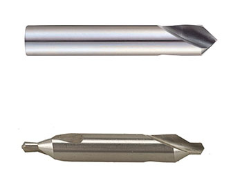
Spot Drill at top, Center Drill at bottom...
Neither has flutes that go very far and they are just used to "spot" a small depression for the twist drill to get a good start on. You don't always need to spot a hole, especially with screw machine length drills. For more information on when it's necessary, see our blog post on When to Use a Spot Drill.
Indexable Drills
Given just how often our machines need to make holes and the advantages of indexable tooling for end and face milling, it should come as no surprise that indexable drills are available too. These are generally best used for larger holes. Not a lot to know here at the basic level other than to keep in mind that they exist and can save you quite a lot of time on a job.
CNC Milling Cutters, Part 2...